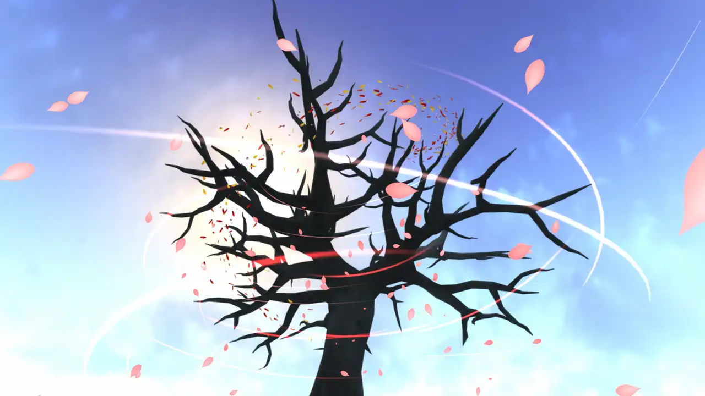
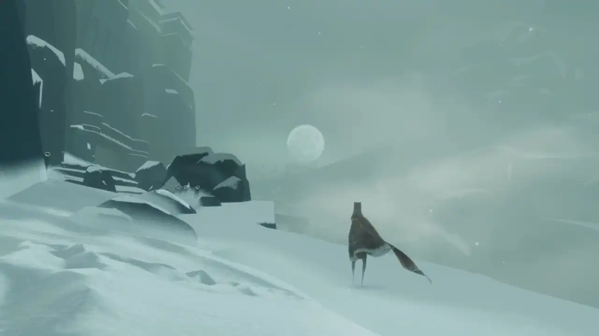
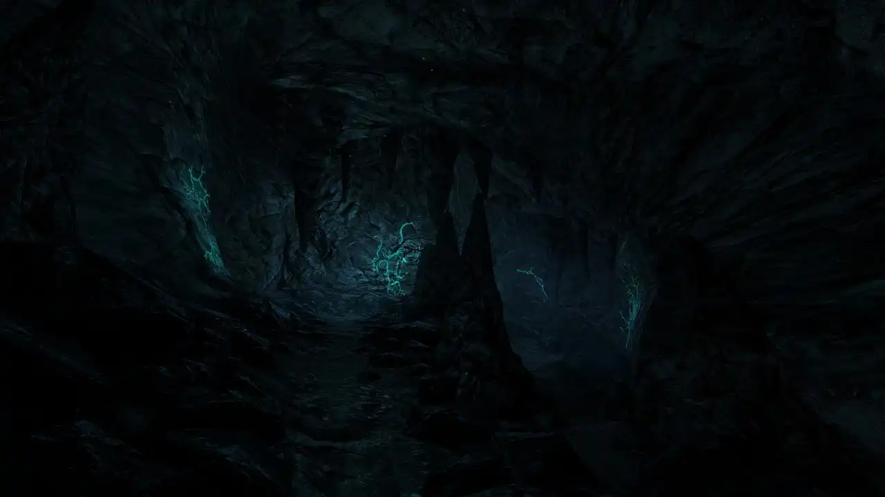
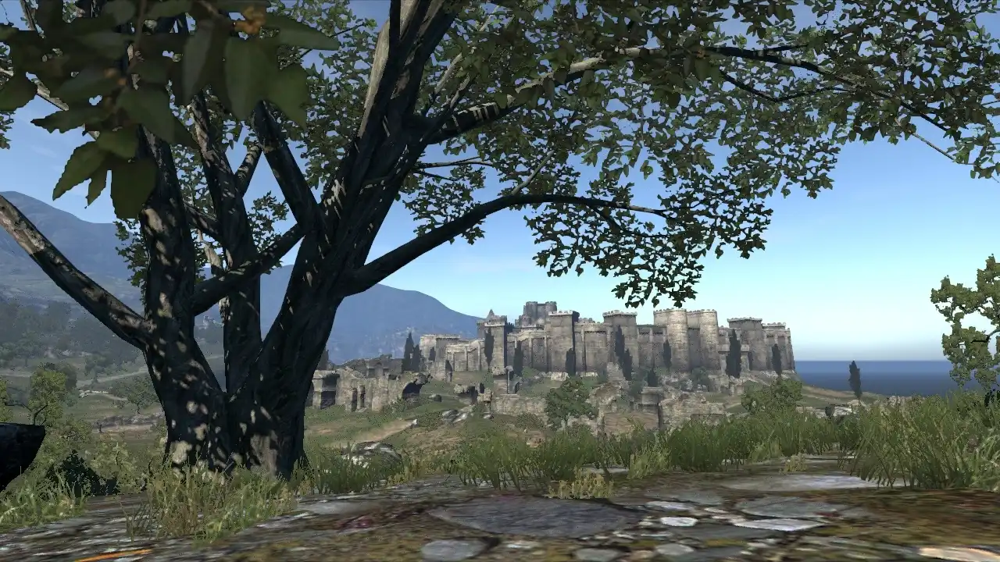

Favourite video games
I played quite a lot of games in a vast variety of genres, but usually only 'walking simulators' truly impress me. I love just wandering around. No fighting, no interactions. I can simply appreciate serenity of the surrondings, without my anxious ass being threatened by anything.
Flower
What's amazes me the most about this game is that it doesn't even have a protagonist. It kinda has 'The World Is Not Ending' vibe (see 'Videos' section in my first Bookmark compilation). Yes, we screwed up, but there's hope for the better future still.
Journey
Couldn't really comprehend what the story is about, it's more abstract than, say, ABZÛ that it often gets compared to in terms of the message. But still I felt a catharsis finishing this one. It makes me feel connected to the world around me and that my relationship with it is reciprocal.
Dear Esther
I loved untangling the allegorical story with bits and pieces of visual cues and narration. If you want to spend an evening sobbing (in a good way), this is the one.
Dragon's Dogma
It's an aRPG, but there's some charm to simply walking there along the shore or in the woods. It's long been my special interest, and the message helped me cope in my most difficult times. I ended up questioning that message and some problematic stuff like racism and misogyny, but I can find things to value about this game anyway. Also you can create femboy characters. Yep. That's the most important thing.
Other games I played
Serene walking or building simulators, totally recommend:
- ABZÛ.
- Brothers: A Tale of Two Sons.
- A Story About My Uncle. Didn't finish, but flying around was satisfying.
- GRIS.
- Cities: Skylines.
Interesting obscure and nostalgic titles:
- The Legend of Kyrandia: Book 2.
- The I of the Dragon. I love it when the dragon is the protagonist rather than The Big Bad! My favourite one is the necromancer.
- Tension: The Void.
- Anachronox.
Games for LAN party via Hamachi:
- FlatOut.
- BMW M3 Challenge.
I didn't like:
- To the Moon. Unlike some folks, I'm not gonna tell you it's a good represantation of autism. Absolutely hate that the story revolves around what a neurotypical feels about being a partner of an autistic person, rather than about an autistic person themself.
- Stray. I bought into the chill atmosphere in the very start, but then it became a tedious run through vomit-inducing sewers with monsters. DNF.
- Everybody's Gone to the Rapture. Too long for a walking simulator, at some point it became tiresome and repetitive. DNF.
Also played:
- The Sims series.
- SPORE.
- SimCity: Societies.
- Heroes of Might and Magic series.
- Need For Speed series.
- Dragon's Dogma Online. The official servers got shut down, but fans are reviving the game. It can be played on their public server or your own server via Hamachi.
- Final Fantasy VIII. Used to be my special interest.
- A Year of Springs.
- The First Tree.
- Monument Valley.
- Townscaper.
- Keepsake.
- Majesty 2: The Fantasy Kingdom Sim.
- Cities XL.
- City Life.
- Gothic series.
- Risen series
- Sonic series (Adventure, Heroes, Riders)